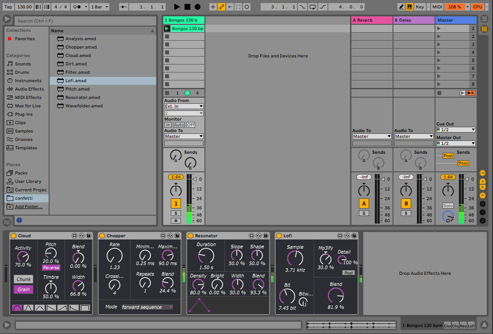

class: center, middle .title[Interactive Music Systems] <br/><br/> .subtitle[Interactive devices] <br/><br/><br/><br/><br/><br/> .date[Oct 2025] <br/><br/><br/> .note[Created with [Liminal](https://github.com/jonathanlilly/liminal) using [Remark.js](http://remarkjs.com/) + [Markdown](https://github.com/adam-p/markdown-here/wiki/Markdown-Cheatsheet) + [KaTeX](https://katex.org)] ??? Author: Grigore Burloiu, UNATC --- name: toc class: left # ★ Table of Contents ★ <!-- omit in toc --> 1. [Ableton Live](#ableton-live) 2. [Example: dance sonification](#example-dance-sonification) 3. [Example: live electronics](#example-live-electronics) 4. [Using M4L for interaction](#using-m4l-for-interaction) 5. [Assignment](#assignment) <!-- Comment out the next slide if you don't want the Table of Contents link --> --- layout: true .toc[[★](#toc)] --- name: ableton-live # Ableton Live tracks - clips -- - devices - effects (audio / midi input&output) - instruments (midi input, audio output) -- scenes -- views --- ## Basic shortcuts | TAB | switch *session* / *arrangement* view | |-|-----------| | Shift-TAB | show effect chain / [audio or midi] clip | |double-click| new clip (in session view), new event (in MIDI clip)| |ctrl-D / alt-drag| duplicate| |ctrl-drag| adjust note velocity| |F10| back to arrangement| --- class: center name: example-dance-sonification # Example: dance sonification [<img style="width:100%" src="../attachments/urban-delta.png">](https://fb.watch/v/7RKPFnbYx/) https://github.com/RVirmoors/deltaScapes ??? - we would have more time in the practical lab session. - scenes, tracks - oschook -> A -> map - bpatcher MapButton.maxpat - live.dial -> sig~ -> MapButton.maxpat - meter~ -> sig~ -> MapButton.maxpat --- ## This project uses M4L for: Live devices: mapping, triggering, audio output [Live API](https://docs.cycling74.com/max8/vignettes/live_api): control DAW parameters --- ## Discussion "strata" of sonification - generative - allusive - curatorial (auditory display) ([Milad Mardakheh](https://learn.flucoma.org/explore/mardakheh/)) -- read more: [The Sonification Handbook](https://sonification.de/handbook/) --- class: center name: example-live-electronics # Example: live electronics [](https://rodrigoconstanzo.com/confetti/) https://github.com/rconstanzo/confetti ??? - Rodrigo C = excellent artist and developer of hardware & software instruments - 2 reasons: immediately useful + RC gives back to community, tools not just free but easily understandable, learnable, extendable by general public - Max: _confetti overview --- ## This project uses M4L for: Live devices: audio effects & analysis [amxd] objects in Max --- ## Discussion When to stay in Live? (as opposed to just using Max) -- - timeline - scenes -- ...and when NOT? - multichannel (not impossible) - free improv[?](https://llllllll.co/t/app-the-party-van/247/589) --- name: using-m4l-for-interaction class: left # Using M4L for interaction various options: - devices in Live: audio effect, instrument, MIDI effect - DAW control via the Live API - embedding devices in Max <br/><br/><br/><br/><br/><br/> Reading: - https://rodrigoconstanzo.com/2015/06/cut-glove/ - https://docs.cycling74.com/max8/vignettes/max_for_live_topic --- name: assignment # Assignment choose a [NIME paper](https://www.nime.org/archives/) and review it: - ~~3 paragraphs / 600-700 words~~ - 2-3 slides ~~presentation~~ discussion - context + what you found interesting (NOT taken from abstract)